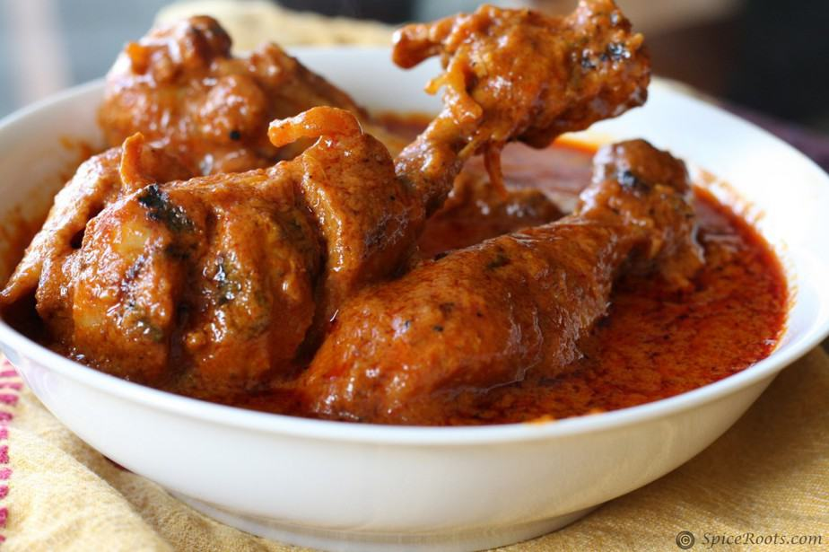

Butter Chicken

Butter chicken, traditionally known as murgh makhani, is an Indian dish originating in Delhi.
It is a type of curry made from chicken with a spiced tomato and butter sauce. Its sauce is known for its rich texture.
Ingredients
For the Marinade :
- 500 g boneless chicken (cut into chunks)
- 1 cup plain yogurt
- 1 tablespoon lemon juice
- 1 tablespoon ginger-garlic paste
- 1 teaspoon turmeric powder
- 1 teaspoon red chili powder
- 1 teaspoon garam masala
- Salt to taste
For the Sauce :
- 2 tbsp butter
- 1 tablespoon vegetable oil
- 1 large onion (finely chopped)
- 1 tablespoon ginger-garlic paste
- 1 can (400g) crushed tomatoes or 2 large tomatoes (pureed)
- 1 teaspoon cumin seeds
- 1 teaspoon coriander powder
- 1 teaspoon red chili powder
- 1 teaspoon garam masala
- 1/2 cup heavy cream
- 2 tablespoons sugar (optional, to taste)
- Salt to taste
- Fresh cilantro (for garnish)
Prepration
Marinate the Chicken:
- In a large bowl, combine yogurt, lemon juice, ginger-garlic paste, turmeric powder, red chili powder, garam masala, and salt.
- Add the chicken pieces and coat them well.
- Cover and refrigerate for at least 1 hour, preferably overnight.
Cook the Chicken
- Preheat the oven to 200°C (400°F) or use a grill.
- Arrange the marinated chicken pieces on a baking sheet or grill.
- Bake or grill for 15-20 minutes until cooked through. Alternatively, you can pan-fry the chicken in a skillet until cooked.
Prepare the Sauce
- In a large pan, heat butter and oil over medium heat.
- Add cumin seeds and let them sizzle for a few seconds.
- Add chopped onions and sauté until they become golden brown.
- Stir in ginger-garlic paste and cook for another minute.
- Add pureed tomatoes and cook for 10-15 minutes until the oil starts to separate.
- Add coriander powder, red chili powder, garam masala, and salt. Mix well.
- Reduce the heat and stir in the heavy cream. Cook for another 5 minutes.
- Add the cooked chicken to the sauce and simmer for 5-10 minutes, allowing the flavors to meld. Adjust seasoning with sugar and salt if needed.
Serve
- Garnish with fresh cilantro
- Serve hot with naan, roti or rice.
Back To Top
Back To Homepage